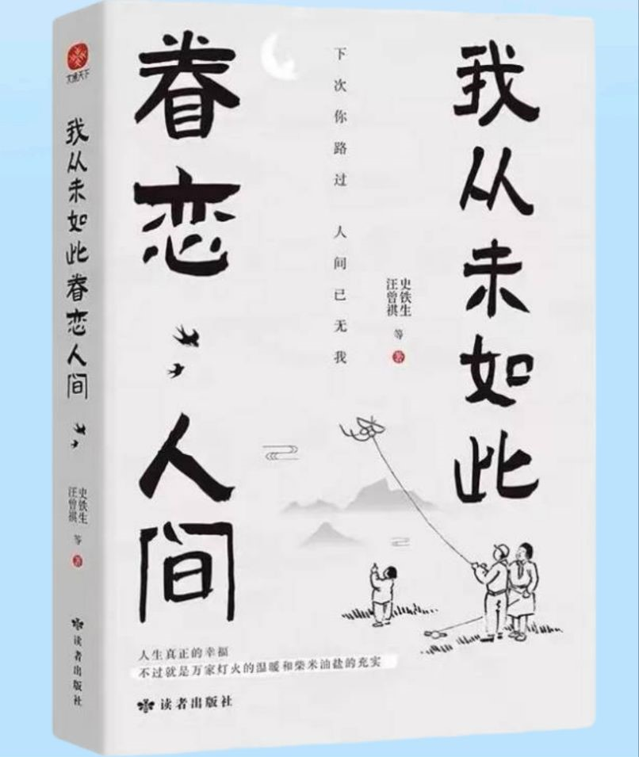
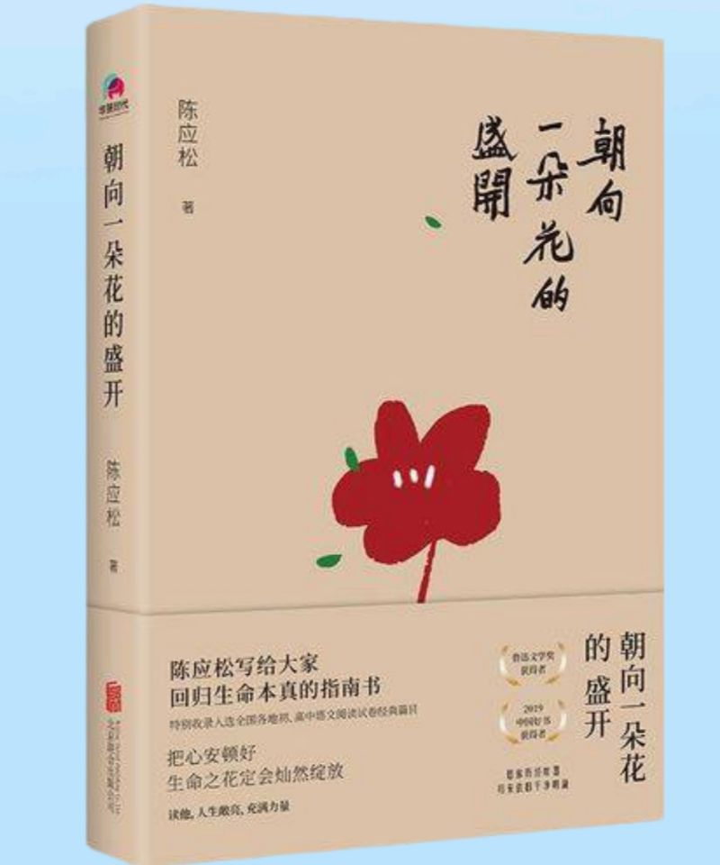

《我从未如此眷恋人间》
人和人的遇见，就是一朵小小的涟漪，缓缓地散开。
我们凭何眷恋人间？是人和人，是更广阔的，人和世间万物的连结。
全书收录了13位知名文学大佬的50篇散文作品。人生真正的幸福，不过就是万家灯火的温暖和柴米油盐的充实。但每天忙忙碌碌的为生活奔波，已经很久没有好好去享受当下了。读完这本书的我，重新学会了在这人世浮沉中感知幸福。

《朝向一朵花的盛开》
我走过的风景成了我的全世界。
生命的纯真，就藏在你走过的路中。
这世界上有两个我，一个在熙熙攘攘的人群里穿梭，一个在寂静的夜里回归自我。
在这本书里我从文字中感受到生命的平静，它仿佛是送给疲惫的我一个精神的强心剂，在文字的海洋里我走进袅袅炊烟，让我心安，不再慌乱，让我从你指缝中找到属于自己的一米阳光。
《心安即是归处》
生命本来没有名字，不完美才是常态。
季羡林先生经历过人生的大苦大悲，生命的跌宕起伏，这本看似鸡汤的散文实际上却是正确对待人生的精华。
不争不辩，不怨不艾，满怀天真，执着于自己的执着，安于当下。
丛浪大化，不忧不惧，高山仰止，景行行止。
真正自洽的人才是真正懂得生命的人。

- 个人主页
- 兴趣爱好
- 我的家乡
- 旅行日记
- 阅读打卡
- 与我联系